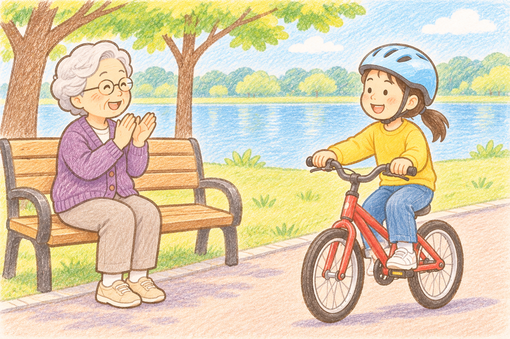

손녀의 첫 두발자전거

오후에 손녀와 동네 호수공원에 갔다. 손녀가 처음으로 보조바퀴 없이 혼자 자전거를 탔다. 나는 벤치에 앉아 손뼉을 치며 응원했다. 손녀가 자랑스러워서 참 뿌듯하고 행복했다.
이 경험은 얼마나 소중한가요?
★★★★★
선택한 경험의 중요도 5점 · 그림의 품질 점수가 아닙니다.
기억잇다 · 교수 설명용 가상 예시
그림일기는 한 개만 만들고, 그 경험에만 별점을 남깁니다. 선택하지 않은 사건과 질문·답변도 따로 보관합니다.

오후에 손녀와 동네 호수공원에 갔다. 손녀가 처음으로 보조바퀴 없이 혼자 자전거를 탔다. 나는 벤치에 앉아 손뼉을 치며 응원했다. 손녀가 자랑스러워서 참 뿌듯하고 행복했다.
이 경험은 얼마나 소중한가요?
★★★★★
선택한 경험의 중요도 5점 · 그림의 품질 점수가 아닙니다.
오늘 하루 중 특히 기억에 남거나, 그림일기로 남기고 싶은 일이 있었나요?
오전에 병원에 다녀왔고, 오후에는 손녀와 호수공원에 갔어요. 손녀가 처음 보조바퀴 없이 혼자 자전거를 탔어요.
어떤 내용을 그림일기로 만들고 싶으세요?
손녀가 자전거를 탄 일을 남기고 싶어요.
손녀가 자전거를 탈 때 무엇을 하고 계셨나요?
벤치에 앉아 손뼉을 치며 응원했어요.
그때 기분은 어떠셨어요?
정말 뿌듯하고 행복했어요.
공원에서 할머니는 응원하고 손녀는 자전거를 타는 장면으로 남길까요?
네, 맞아요.
이 경험은 얼마나 소중한가요?
별 다섯 개요.
장소·동행인·활동·시간대·고유 단서는 이미 말했으므로 같은 내용을 다시 묻지 않는 예시입니다. 실제 질문은 누락된 정보에 따라 달라집니다.
오전 병원 방문의 발언 근거와 미확인 정보도 별도 사건으로 보관합니다. 이 사건의 그림은 만들지 않고 별점도 묻지 않습니다. 해당 정보는 공원 그림의 생성 입력에 섞지 않습니다.